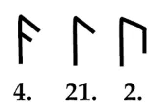

Rune Grimoire
 ALU
ALU
One of the oldest and most effective runic formulas, appearing on stones and talismans from as early as 400 CE. The word literally means "ale," though ALU originally referred to magickal power and divine inspiration. The term was later transferred to one of the primary symbols of that power: the intoxicating brew. This force was often used to protect sacred sites from the uninitiated.
Component Runes
- Ansuz (A): Ódhinic force, divine inspiration
- Laguz (L): life force, vital power
- Uruz (U): primal shaping strength

Numerical Analysis
- Rune count: 3 (multiple: 1 x 3 [prime])
- Runic total: 27 (multiple: 3 x 9)
The force of ALU is one of almost perpetual motion, constantly turning in on itself and intensifying. See Foundations & Ethics for deeper interpretation.
Modulation
The formula may be inscribed in a variety of ways:
- A-L-U (standard)
- U-L-A (reversed)
- The A-rune may face either direction
Usage
A tine created with this formula imparts general protection while providing wisdom, inspiration, magickal power, and good health within a lawful life.